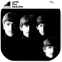
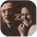
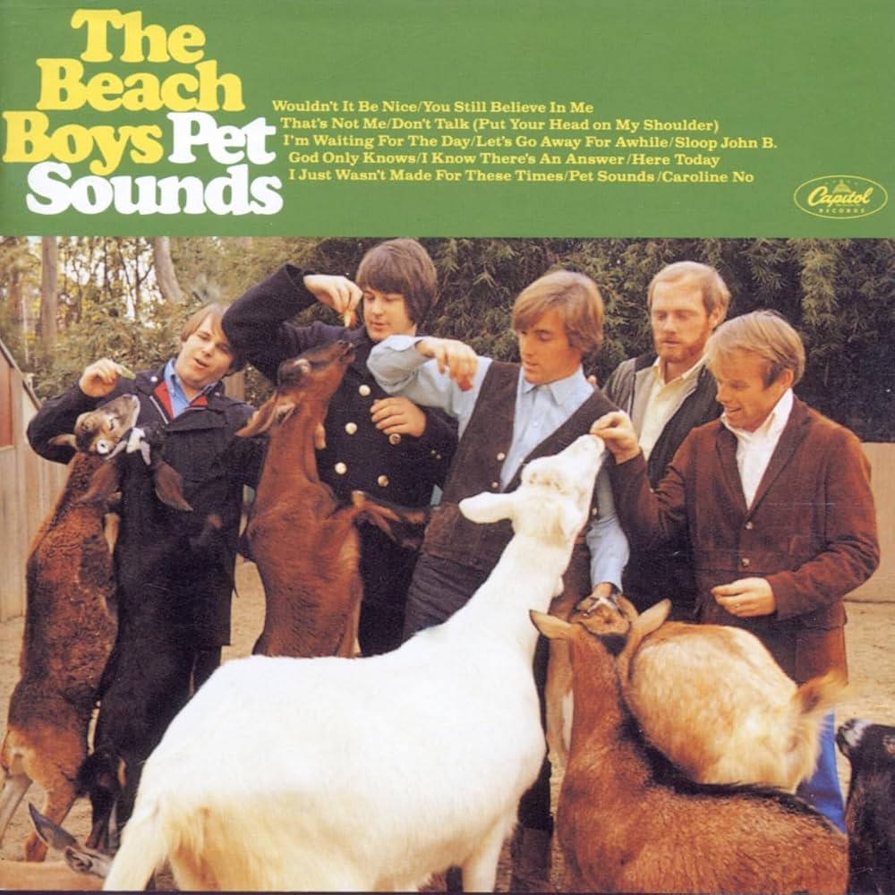
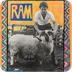
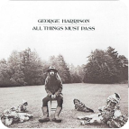
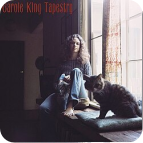
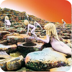

Ouvir agora
Músicas populares
Ver mais
Kid A
Radiohead
Kid A
2000

Beat it
Michael Jackson
Thriller
1982
Espresso
Sabrina Carpenter
Short n' Sweet
2025
u
Kendrick Lamar
To Pimp A Butterfly
2015
Playlists em destaque
Ver todas
Clássicos do Rock
42 músicas

MPB
35 músicas
Música para relaxar
60 músicas
Explore o acervo
Álbuns Artistas MúsicasDescubra álbuns - 1960s e 1970s
Ver mais
Pet Sounds
The Beach Boys
1966

RAM
Paul McCartney
1971

All Things Must Pass
George Harrison
1970

Tapestry
Carole King
1971

Off The Wall
Michael Jackson
1979

Houses of the Holy
Led Zeppelin
1973